Canlı radyoyu geri sar.Rewind live radio.
Şarkının başını mı kaçırdın? Geri sar. Telefon mu çaldı? Duraklat, kaldığın yerden devam et. RadioLog dünyanın binlerce radyosunu cebine getirir ve çalan şarkıları senin için not eder.Missed the start of a song? Rewind. Phone rang? Pause and pick up where you left off. RadioLog puts thousands of the world’s stations in your pocket and notes down the songs they play.
Ücretsiz. Hesap gerekmez. Android 7.0 ve üzeri.Free. No account. Android 7.0 and up.
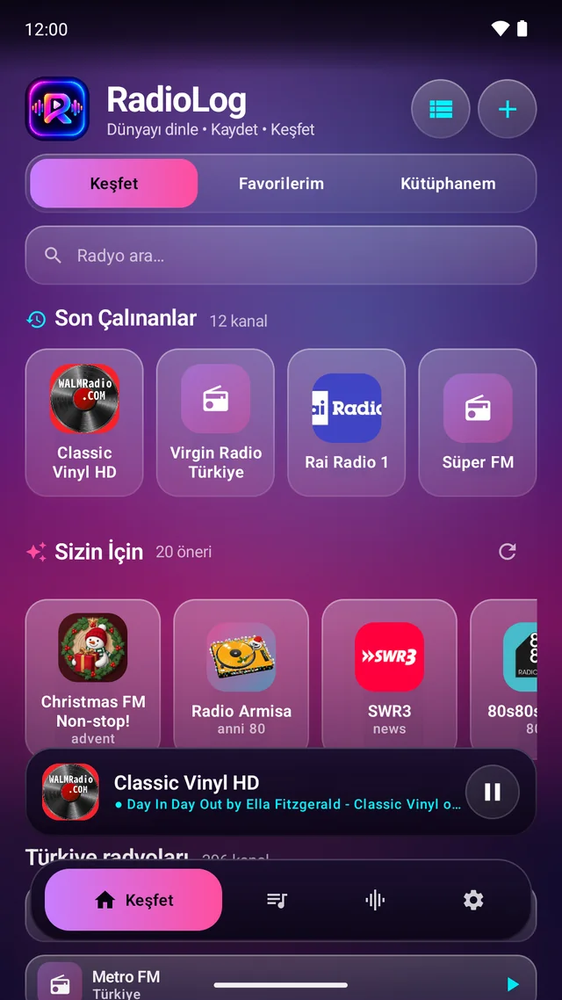
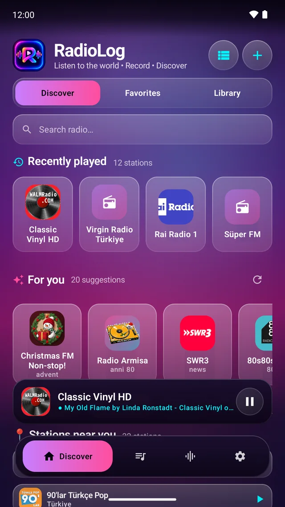
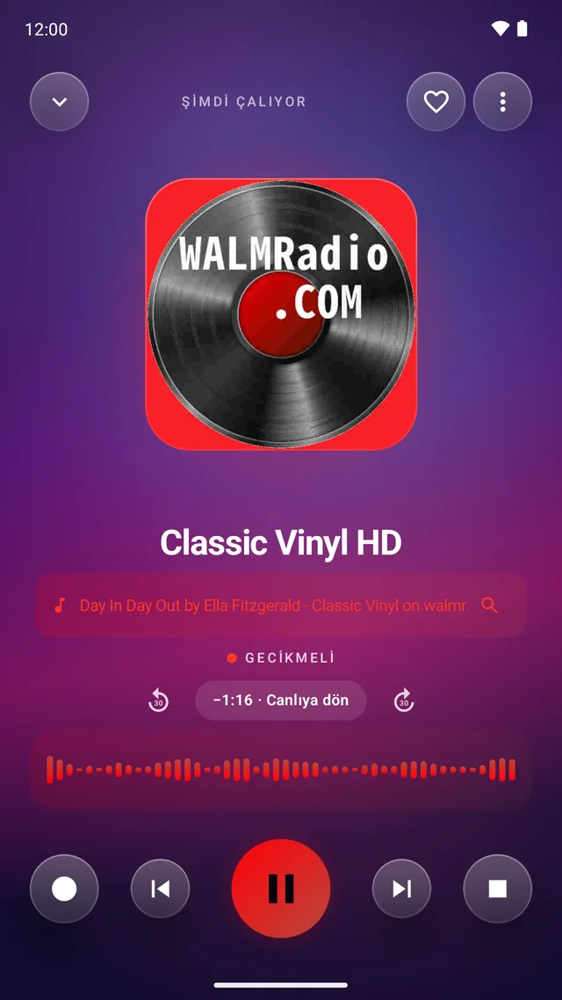
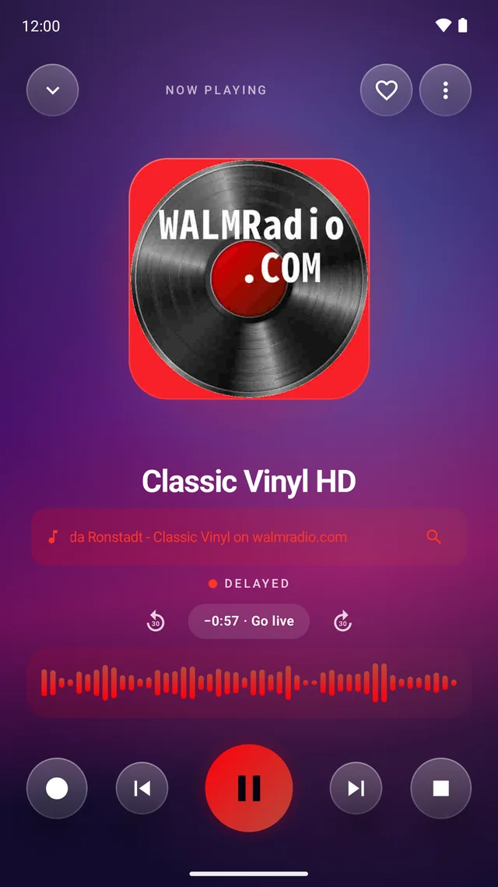
Şeridi sola sürükleDrag the strip left
Çalarken yayın arka planda saklanır. Kaçırdığın anonsa ya da şarkının başına dönersin; şarkı adı da o an duyduğunu gösterir.While you listen, the broadcast is kept in the background. Go back to the announcement or the intro you missed, and the title follows what you actually hear.
Bu bir gösterimdir, ses çalmaz. Geri sarma MP3 ve AAC yayınlarda çalışır.This is a silent demo. Rewind works with MP3 and AAC streams.
Dünyanın radyoları, bir dokunuş uzağındaThe world’s radio, one tap away
- Ülkeni seç. En popüler istasyonlara hemen göz at.Pick a country. Browse its most popular stations right away.
- Türe göre süz. Pop, rock, haber, caz, klasik, dans ve daha fazlası.Filter by genre. Pop, rock, news, jazz, classical, dance and more.
- Yakınımda. Çevrendeki yerel radyoları bul.Near me. Find local stations around you.
- Kendi yayınını ekle. Adresini bildiğin her radyo listene girer.Add your own stream. Any station whose address you know can join your list.
- Bozulan bağlantıyı onarır. Adresi değişen radyonun yenisini arar ve bulunca kaydeder.Repairs broken links. When a station moves, RadioLog looks for the new address and saves it.
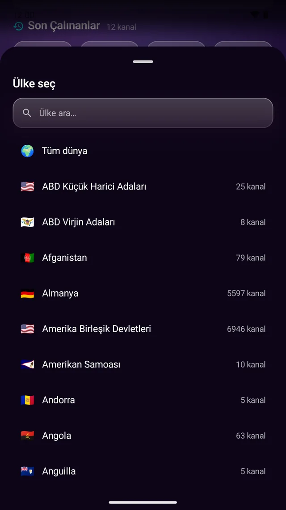
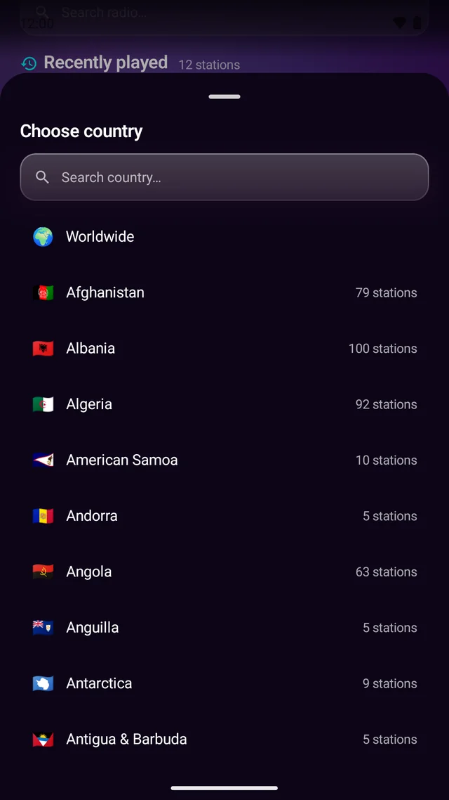
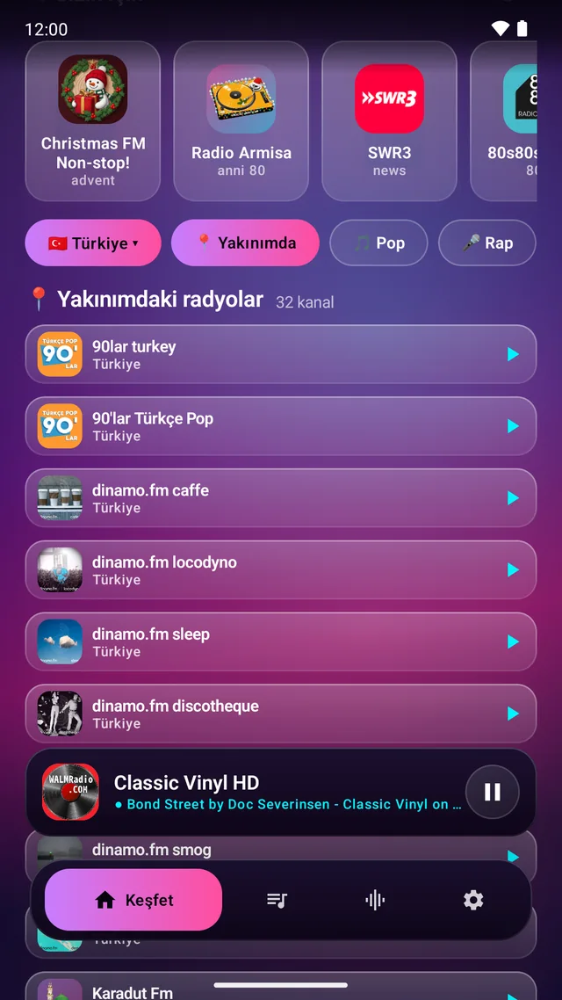
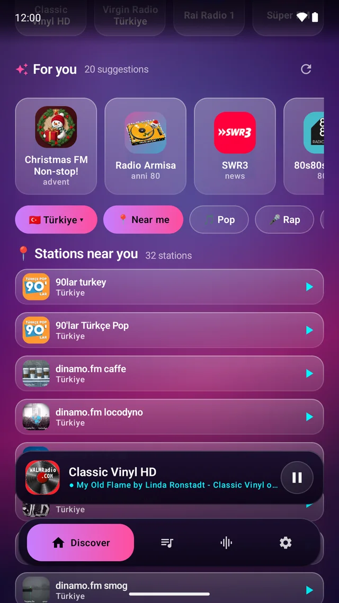
“Neydi o şarkı?” diye aramazsınNever wonder “what was that song?”
Radyo şarkı adını yayınlıyorsa Şarkı Günlüğü onu saati ve istasyonuyla saklar.When a station broadcasts song titles, the Song Log keeps them with the time and station.
- Yıldızla ve ara. Sevdiklerini tek listede topla.Star and search. Keep your favorites in one list.
- Müzik uygulamanda aç. Spotify, YouTube Music, YouTube ya da Apple Music.Open in your music app. Spotify, YouTube Music, YouTube or Apple Music.
- Kopyala ya da paylaş. Şarkı adı bir dokunuş uzağında.Copy or share. The title is one tap away.
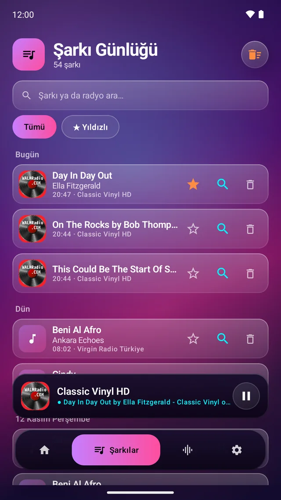
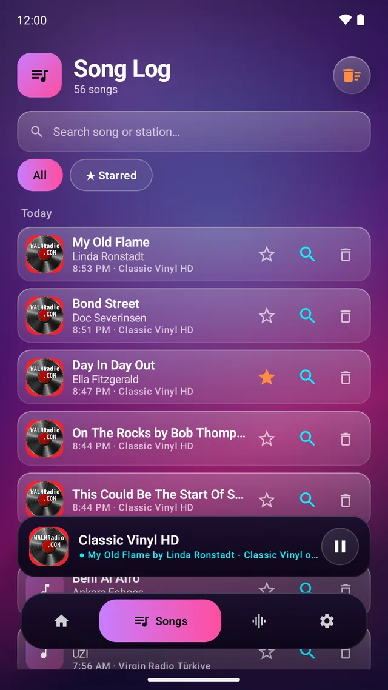
Kaydet, sonra şarkılara bölRecord, then split into songs
- Arka planda sürer. Başka uygulamaya geçsen de kayıt devam eder.Keeps going in the background. Switch apps and recording continues.
- Parçalara ayırır. Premium ile kayıt, şarkı değişimlerinden adı ve sanatçısı yazılı dosyalara bölünür.Splits into tracks. With Premium, recordings are cut at song changes into files tagged with title and artist.
- Telefonunda kalır. Kayıtların hiçbir sunucuya yüklenmez.Stays on your phone. Recordings are not uploaded to any server.
Kayıt kişisel kullanım içindir. Lütfen telif haklarına saygı göster.Recording is for personal use. Please respect copyright.
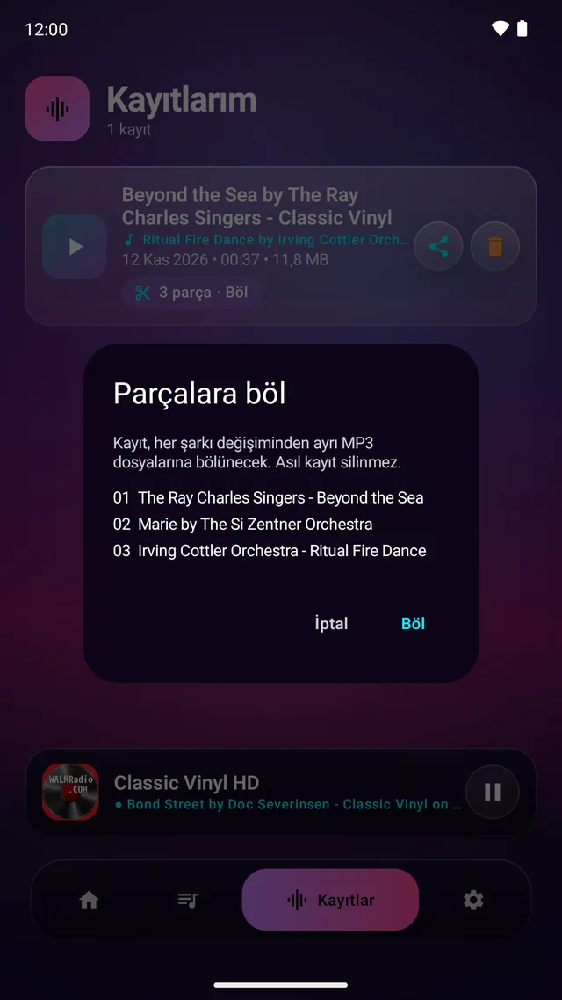
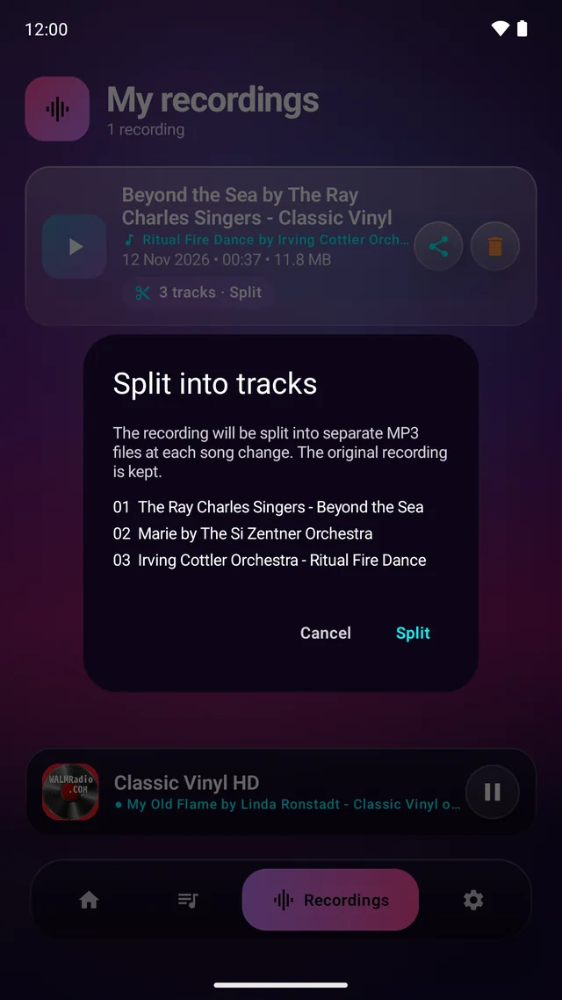
Sesini ayarla. Radyoyla uyan, radyoyla uyu.Shape your sound. Wake up and drift off with radio.
- Ekolayzır. Hazır ayarlar, Premium ile bant ayarları ve cihazın destekliyorsa bas güçlendirme.Equalizer. Presets, plus band control with Premium and bass boost where your device supports it.
- Radyo alarmı. Güne sevdiğin istasyonla başla.Radio alarm. Start the day with your favorite station.
- Uyku zamanlayıcısı. Sen uyurken yayını kapatır.Sleep timer. Stops the radio after you fall asleep.
- Ses normalizasyonu. Kısık yayınları yükseltir.Volume normalization. Lifts quiet stations.
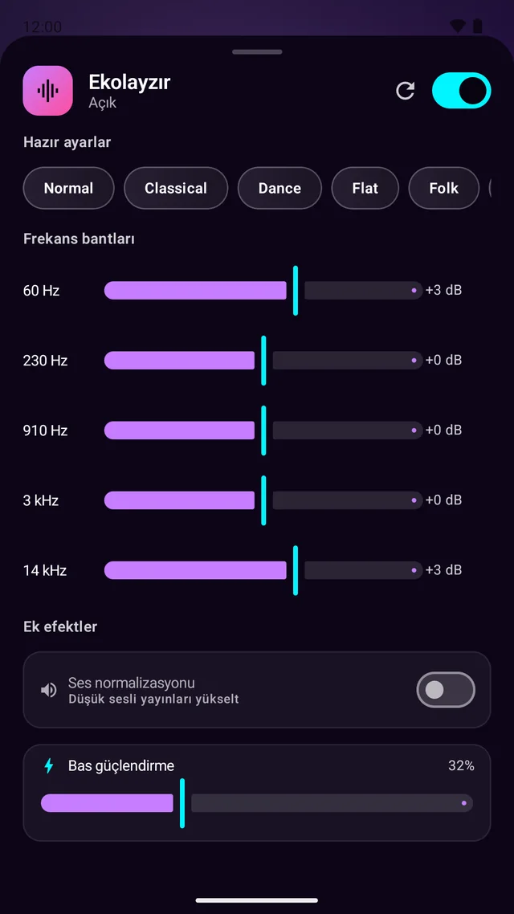
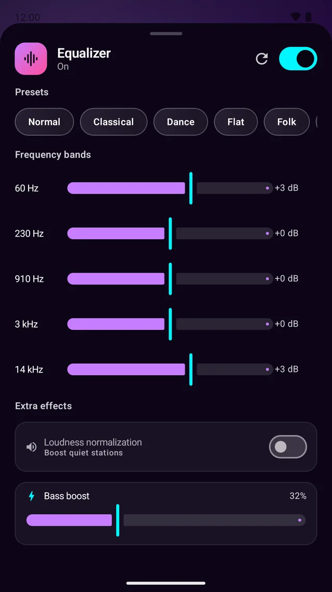
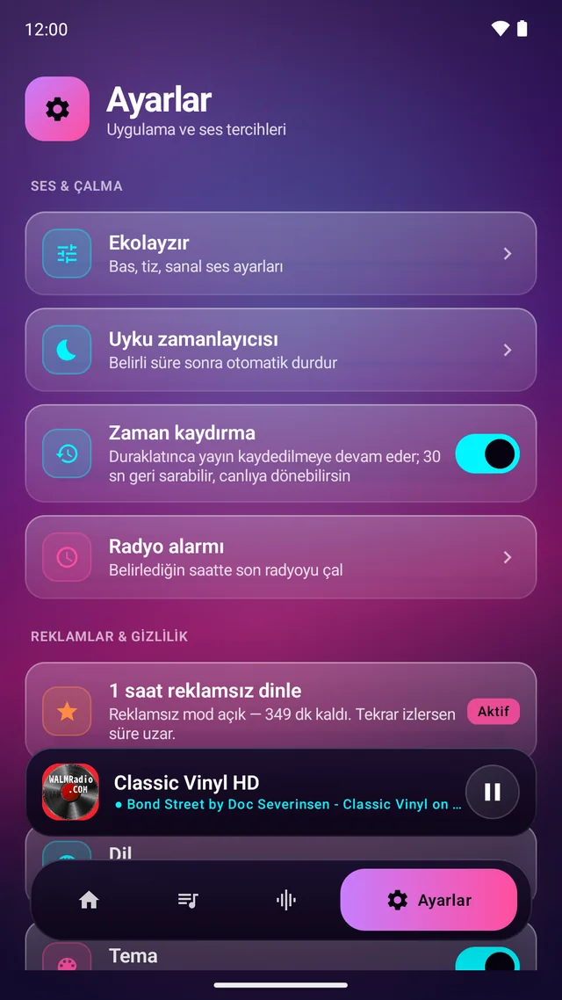
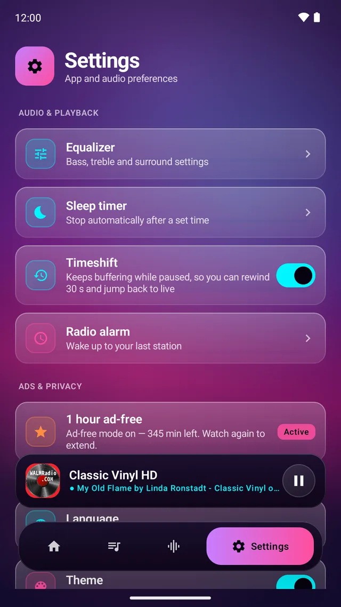
Evde, yolda, tabletteAt home, on the road, on your tablet
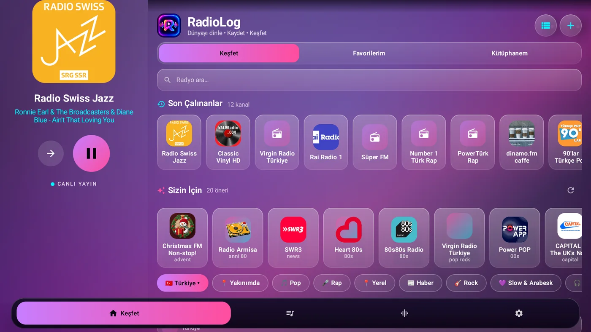
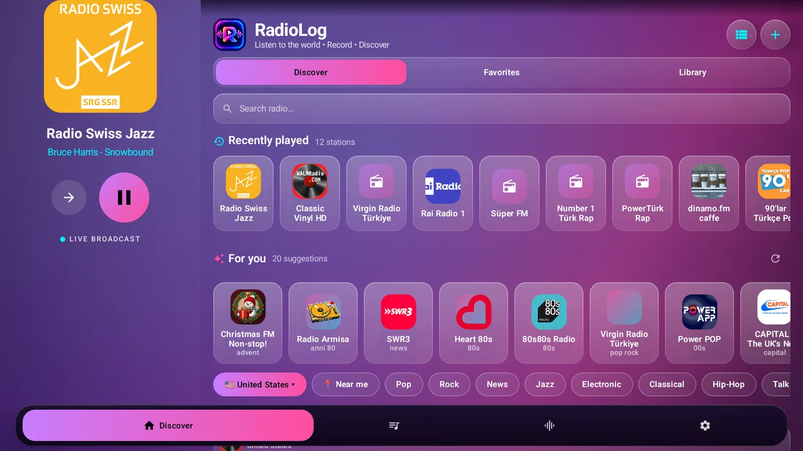
Android Auto
Favoriler, son dinlenenler ve sesli arama araç ekranında.Favorites, recent stations and voice search on your car screen.
Chromecast
Radyoyu televizyonuna ya da hoparlörüne gönder.Send the radio to your TV or speaker.
Hızlı erişimQuick access
Kilit ekranı, bildirim, hızlı ayarlar düğmesi, araç takımı ve kısayollar.Lock screen, notification, quick settings tile, widget and shortcuts.
Açık ve koyu temaLight and dark themes
Telefonda da tablette de rahat okunan bir görünüm.A comfortable look on phones and tablets.
17 dil konuşurSpeaks 17 languages
Ücretsiz başla, istersen Premium’a geçStart free, go Premium if you like
Premium tek seferlik satın alma ya da yıllık abonelikle açılır. Fiyatı Google Play ülkene göre gösterir.Premium is a one-time purchase or a yearly subscription. Google Play shows the price for your country.
| - | ÜcretsizFree | Premium |
|---|---|---|
| Geri sarmaRewind | 5 dakika5 minutes | Daha uzunLonger |
| KayıtRecording | 15 dakika15 minutes | Süre sınırı yokNo time limit |
| Şarkılara bölmeSong splitting | YokNo | VarYes |
| Şarkı günlüğüSong log | Son 7 günLast 7 days | Tüm geçmişFull history |
| EkolayzırEqualizer | Hazır ayarlarPresets | Bantlar ve basBands and bass |
| ReklamAds | VarYes | YokNone |
Ücretsiz sürümde tam ekran reklam yalnızca uygulamayı açarken ya da istasyon değiştirirken çıkar. Oynatıcı ve kilit ekranında reklam yoktur. Kısa bir video izleyip 1 saat reklamsız dinleyebilirsin.In the free version, full-screen ads appear only when you open the app or switch stations. There are no ads on the player or lock screen. Watch a short video for one ad-free hour.
Merak edilenlerGood to know
Hesap açmam gerekiyor mu?Do I need an account?
Hayır. Uygulamayı açıp dinlemeye başlarsın. Favorilerin, şarkı günlüğün ve kayıtların telefonunda durur.No. Open the app and start listening. Your favorites, song log and recordings stay on your phone.
Konumum kullanılıyor mu?Is my location used?
Yalnızca “Yakınımda”ya dokunduğunda ve izin verdiğinde, yaklaşık konumun kullanılır. Ayrıntılar gizlilik politikasında.Only your approximate location, and only when you tap “Near me” and allow it. See the privacy policy.
İnternet kullanıyor mu?Does it use data?
Evet, yayınlar internetten gelir. Mobil veride kullanım istasyonun kalitesine göre değişir.Yes, stations stream over the internet. Mobile data use depends on the station’s quality.
İstasyonlar nereden geliyor?Where do the stations come from?
Açık topluluk veritabanı Radio Browser’dan. Türkiye için ayrıca elle seçilmiş kategoriler var. Yayınlar ilgili radyolara aittir.From the open Radio Browser community database, plus hand-picked categories for Türkiye. Broadcasts belong to their stations.